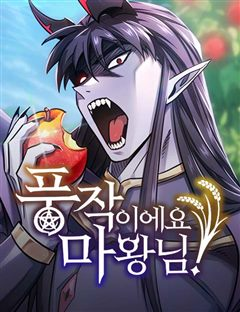

판타지 방대한 세계관 웹툰 추천 TOP 30
판타지 작품 중에서 세계관, 신화, 인외존재, 동양풍판타지 같은 요소가 들어간 작품만 골랐어요. 네이버웹툰·카카오웹툰·레진코믹스에서 조건에 맞는 작품 158개 중 인기 순으로 30개를 골랐어요. 인기 TOP 3: 신의 탑, 전지적 독자 시점, 호랑이형님
2026-10-10 기준 · 성인 작품 제외
내 취향으로 더 좁혀서 추천받기 →-
1

-
2
 네이버웹툰
네이버웹툰전지적 독자 시점
'이건 내가 아는 그 전개다' 한순간에 세계가 멸망하고, 새로운 세상이 펼쳐졌다. 오직 나만이 완주했던 소설 세계에서 평범했던 독자의 새로운 삶이 시작된다.
판타지세계관레드아이스 스튜디오게임아포칼립스네이버웹툰에서 보기 → -
3
 네이버웹툰
네이버웹툰호랑이형님
신비한 힘을 가진 아이를 이용하여 세상을 지배하려는 반인반수 흰눈썹! 그리고 얼떨결에 아이의 보호자가 된 괴물호랑이 빠르와 착호갑사 지망생 가우리! 이제 힘을 합쳐 흰눈썹으로부터 아이와 세상을 지켜라!!!
판타지세계관동양풍판타지명작판무네이버웹툰에서 보기 → -
4
 네이버웹툰
네이버웹툰내가 키운 S급들
F급 헌터. 그것도 잘나가는 S급 동생 발목이나 잡는 쓸모없고 찌질한 F급 형. 개판된 인생 대충 살다가 결국 동생 목숨까지 잡아먹고 회귀한 내게 주어진 칭호, '완벽한 양육자'. 그래, 이번에는 나대지 말고 얌전히 잘난놈들 뒷바라지나 해 주자. 라고 생각했는데, S급들이 좀 이상하다.
판타지세계관현대판타지현대상태창네이버웹툰에서 보기 → -
5

-
6
 네이버웹툰
네이버웹툰99강화나무몽둥이
약육강식이 진리인 가상 현실 게임 '크로노 라이프'. 허접이라며 무시만 당하던 '나'는 우연히 얻은 초보용 기본 무기 '나무 뭉둥이' 를 +99 강화까지 성공하게 되고, 본인을 무시하던 놈들을 찾아다니며 몽둥이로 무자비하게 패기 시작하는데..! 막장 스케일 사이다 액션 스타트!!
판타지인외존재사이다게임유혹녀네이버웹툰에서 보기 → -
7
 네이버웹툰
네이버웹툰정글쥬스
의문의 벌레약 ‘정글쥬스’로 인해 곤충인간이 되었다. 이를 숨기며 살던 대학생 장수찬은 어느 날 그 모습을 모두에게 보이게 되고, 곤충인간들의 사회로 들어가 약육강식의 논리와 맞서 싸우게 되는데... 각양각색 곤충능력자들의 판타지 액션 슈퍼스트링 유니버스의 새로운 히어로 등장!
판타지인외존재현대판타지열혈캠퍼스네이버웹툰에서 보기 → -
8
 네이버웹툰
네이버웹툰쿠베라
신의 이름을 가진 소녀 쿠베라 리즈. 15세 생일에 외출에서 돌아오다가 초토화되어버린 마을을 목격하게 되는데..! 신, 수라, 마법사들 사이에서 펼쳐지는 소속불명 장르 혼합 판타지.
판타지세계관신화인외존재절망적인네이버웹툰에서 보기 → -
9
 네이버웹툰
네이버웹툰멸망 이후의 세계
<전지적 독자 시점> 싱숑 작가 원작. 이것은 모두가 과거로 돌아갈 때 마지막까지 회귀하지 않았던 한 사나이의 이야기다.
판타지세계관레드아이스 스튜디오액션판타지차원이동네이버웹툰에서 보기 → -
10
 네이버웹툰
네이버웹툰66666년 만에 환생한 흑마법사
강대했던 흑마법사 디아블로 볼피르. 12신의 계략에 당해 억겁 속에 봉인되었지만, 그로부터 66666년이 흘러 다시금 이 땅에 강림한다! "응애!" 웰턴 백작의 갓 태어난 장남으로. 딥다크 매직 판타지 시작!
판타지신화중세판타지액션서양마법네이버웹툰에서 보기 → -
11
 네이버웹툰
네이버웹툰미래의 골동품 가게
남해의 먼 섬에 살고 있는 소녀, '미래'. 미래의 부모님이 바다에서 돌아오지 못한 그날부터, 모든 것들이 변하기 시작했다. 저주를 풀기 위한 단 한 가지의 방법. 소중한 것들을 지키기 위한 기묘한 소녀의 퇴마가 시작된다.
판타지신화동양풍판타지오컬트판타지시리어스네이버웹툰에서 보기 → -
12
 네이버웹툰
네이버웹툰저 그런 인재 아닙니다
스트레스만 받으면 피를 토하는 병약하기 짝이 없는 나, 데온 하르트. 하지만 어쩐지 강하다는 오해를 받고 제국에서는 모두의 두려움을 받는 하르트 명예 백작인 동시에, 마계에서는 마왕이 가장 신임하는 0군단장이 되었는데… 예?! 제가요? 저 그런 인재 아닌데요?!
판타지세계관이세계다크히어로소설원작네이버웹툰에서 보기 → -
13
 네이버웹툰
네이버웹툰게임 속 바바리안으로 살아남기
지금껏 아무도 클리어하지 못한 게임 [던전 앤 스톤]을 9년간 플레이한 끝에 최종 보스 스테이지에 도달한 이한수. 그러나 보스 방에 입장함과 동시에, 튜토리얼 완료라는 멘트와 함께 [던전 앤 스톤] 속 바바리안 '비요른 얀델'에 빙의하게 된다. 도시에서 부과하는 막대한 세금을 내지 못…
판타지인외존재게임생존액션네이버웹툰에서 보기 → -
14

-
15
 네이버웹툰
네이버웹툰디펜스 게임의 폭군이 되었다
타워디펜스&던전오펜스 RPG <제국을 지켜라> 누구도 클리어하지 못한 난이도로 게임의 엔딩을 봤다. 그런데 정신을 차리니 게임 속이다. 그것도 공략이 불가능한 튜토리얼 스테이지다. "반드시 클리어해 주마, 이 거지 같은 게임……!"
판타지인외존재게임상태창고인물네이버웹툰에서 보기 → -
16
 네이버웹툰
네이버웹툰아카데미의 천재칼잡이
후회로 점철된 채 끝나버린 삶. 우연히 찾아온 두 번째 기회. 세상을 구하기 위한 로난의 모험이 시작된다.
판타지인외존재액션판타지마법크리처네이버웹툰에서 보기 → -
17
 네이버웹툰
네이버웹툰나이트런
우주력 430년. 성간이동이 가능해져 별과 별을 이동하는 시대 인간은 괴수와 싸우고 있다. 기사와 함께.광활한 우주를 배경으로 판타지 SF가 다가온다.
판타지세계관전쟁절망적인정치네이버웹툰에서 보기 → -
18
 네이버웹툰
네이버웹툰종말에서 살아남기
평생 지하실에 감금되어 훈련받은 소년. 그리고 그를 가둔 미치광이 아빠가 하는 말 "종말이 온다." 지금껏 수없이 반복해온 훈련과 생존 지식으로 종말에서 살아남아야만 한다.
판타지인외존재시리어스생존크리처네이버웹툰에서 보기 → -
19
 네이버웹툰
네이버웹툰리턴 투 플레이어
어느 날, 게임이 되어버린 세상. 갑자기 나타난 몬스터들이 사람들을 죽이고, 사람들은 플레이어가 되어 퀘스트를 달성해야 한다! 인류의 종말에서 회귀한 2회차 플레이어, 김세한. 그는 과연 세상을 이렇게 만든 '시스템'을 쳐부술 수 있을까!
판타지신화인외존재게임배틀네이버웹툰에서 보기 → -
20
 네이버웹툰
네이버웹툰염라강림
지옥이 망했다. 피가 흘러야 할 황천에는 맑은 물이 흐르고 망자들을 끓이던 솥은 차갑게 식은지 오래다. 은퇴한 염라대왕은 자신의 행복을 위해 윤회의 길을 택하고자 하지만, 혼란스러워진 지옥과 사라진 자신의 후임 털보로 인해 윤회의 길을 걸을 수 없게 된다. 인간 세상의 신이 되기 위하…
판타지신화인외존재동양풍판타지동양네이버웹툰에서 보기 → -
21
 네이버웹툰
네이버웹툰말년용사
전역하기 3일 전 어이없는 사고로 죽어버린 말년 병장. 갑자기 이세계로 떠나라는 현실을 받아들이지 못하고 난리를 치다 맨몸으로 이세계에 떨어지는 벌을 받게 된다. 말년 병장의 눈물겨운 밀리터리 생존 판타지!
판타지신화액션판타지액션개그네이버웹툰에서 보기 → -
22
 네이버웹툰
네이버웹툰사람의 탈
탈은 예술, 춤은 무술! 천대받는 탈춤광대 ‘봉산’은 스승이 남긴 지도를 따라 왕이 되려는 괴물 호랑이 ‘사풍흑호’를 막기 위해 전설 속의 '사람의 탈'을 찾아 모험을 떠나게 되는데 …
판타지인외존재동양풍판타지모험동양네이버웹툰에서 보기 → -
23
 네이버웹툰
네이버웹툰사시미 한 자루로 아카데미를 씹어먹음
‘베면 잘릴 것입니다.’ 전국 최고의 칼잡이라고 불리던 내가 과금 몇 번 해본 모바일 게임에 떨어졌다. 무려 '검신(劍神)의 가호'를 부여받고⋯! 그런데⋯ 사용할 수 있는 무장이 고작 사시미뿐이라고? 하루에 단 1분. 나는 사시미로 검성이 된다.
판타지세계관인외존재게임상태창네이버웹툰에서 보기 → -
24
 네이버웹툰
네이버웹툰모든걸 기억하는 천재무사
모든걸 기억하는 삼류무사 진소운. 30년 전 마교가 재림하기 전으로 회귀하다. 과거로 돌아온 사실이, 딱히 날더러 세상을 구하라는 신호로는 보이진 않는다. ‘그랬다면 최소한 뭔가 특별한 능력을 주거나 장삼봉 조사의 영혼 같은 거라도 붙여줘야 했을 테니까?’ 답 없는 삼류 문파인 사문.…
판타지동양풍판타지레드아이스 스튜디오액션판타지소년물네이버웹툰에서 보기 → -
25

네이버웹툰풍작이에요, 마왕님!
게임 속 최종보스 마왕이 되었다. 그런데... 이대로 인간계를 침공하면? 내가 키운 만렙 주인공에게 사망. 그렇다고 침공을 중단하면? 굶주린 수하 마족 사천왕에게 사망. ...그러므로, 답은 농사다.
판타지세계관농사판타지개그게임판타지네이버웹툰에서 보기 → -
26
 네이버웹툰
네이버웹툰이세계 캠핑으로 힐링 라이프
미각을 잃은 스타 셰프 강현은 사람들의 눈을 피해 한적한 시골로 숨는다. 시골 할아버지 집에서 발견한 이세계로 이어진 통로, 기왕 도망 온 김에 이세계에서 유유자적 캠핑 라이프를 즐기려고 하는데… 자꾸만 강현에게 관심을 가지는 이세계 사람들. 과연 강현은 진짜 힐링을 찾을 수 있을 것…
판타지인외존재감성적인일상이세계요리네이버웹툰에서 보기 → -
27
 네이버웹툰
네이버웹툰용사보다 너무 강해서 힘을 숨김
어릴 적부터 만화 속에 나오는 주인공보다 평소에는 가벼워 보이지만 사실 누구보다 강한 '힘을 숨긴 캐릭터'가 멋있었다 그리고 찾아온 전생의 기회! "새로운 세상에서 무엇이 되고 싶나요?" "힘숨찐이 되고 싶어!" ...내가 바란 힘숨찐은 이런 게 아닌데!?
판타지신화인외존재액션판타지마법네이버웹툰에서 보기 → -
28

-
29
 네이버웹툰
네이버웹툰달로 만든 아이
어린 시절부터 남들이 보지 못하는 존재들을 볼 수 있던 '박하'. 평생을 외롭게 살아온 박하는 18살이 되던 해, 처음으로 자신과 같은 것을 볼 수 있는 '진도'와 그의 친구들을 만나게 된다. 어느 날, 진도를 통해 박하가 과거에 영물들을 군림했던 '달아이'라는 사실이 밝혀지게 되고…
판타지인외존재오컬트판타지자극적인이능력네이버웹툰에서 보기 → -
30
 네이버웹툰
네이버웹툰환생좌
신의 심심함을 만족시키기 위해 시작된 이면세계, 그로 인해 멸망 직전 위기에 처한 인류는 마지막 생존자 중 한 명인 '강한수'를 과거로 보내 미래를 바꾸려 한다. "너희가 가장 믿어야 할 것은 자신의 능력이다. 쓸모없으면 반드시 버려지기 마련이지"
판타지신화인외존재액션판타지상태창네이버웹툰에서 보기 →